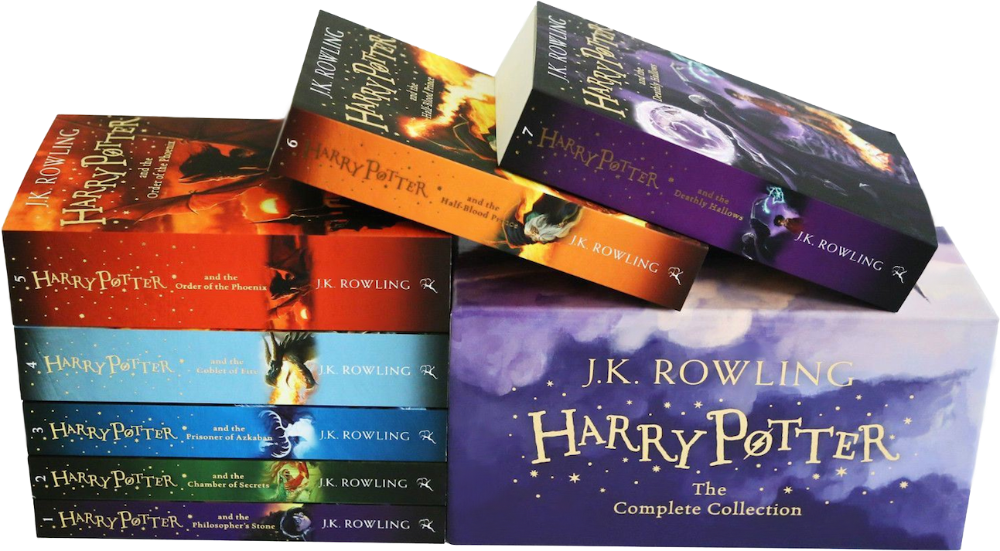

Quick Links :-


Harry Potter (Novel Series ) : J. K. Rowling
Click here to Buy @ Best Price - Link 1

Click here to Buy @ Best Price - Link 2
Rating : 4.5 / 5
Summary :-
It's hard to write a book about witches and wizards without it being boring at times. Author J. K. Rowling does something amazing with her Harry Potter series: writing a fantasy novel that reads like a gripping suspense-filled mystery.
There are some distinctive elements to the writing, but the general framework is formulaic in nature. The defining aspect of Rowling's work has to do with the creation of an extremely interesting and surreal fantasy world to place her characters in, based on witchcraft and magic. This world consists of a school where some fascinating subjects related to magic are taught.
She begins her story by showing the reader an incredibly boring world; it’s reality: it’s mundane, grey, tasteless and monotonous. So, in essence, it’s everyday life. It’s just the crap that every kid has to deal with, and adults too.
Well, maybe to an extreme with the abuse and coldness that Harry receives, but you get my point. Life sucks for him. But then she reveals what every child longs for; she reveals a world of mystery reeling with the fantastic and wondrous things she writes. Under the normal boring world there is hidden a better world, a more exciting world: a world of magic. Thus, Rowling turns off the realism and starts writing fantasy, and this is where she completely grabbed her audience.
Review :-
This is one series that deserves its hype and fame. The story pulls you along, the characters feel like friends, and in the end I could not close the last book without feeling like a chapter in my own life had ended.
I couldn't be done with the series and I had to immediately read the entire set again to help get over my sense of loss at being done with Harry Potter. I don't get attached to many things and I cry over less, but this series is one that will always be close to my heart.
A truly seven masterful works of fiction...
I just really enjoyed reading them a lot!! All of them became my favorite, and not just a specific one. It won't be an exaggeration if I say this was the best fiction work I've ever read!! Truly, an Masterpiece...I'll give this overall series an 4.5/5 rating, for sure!!